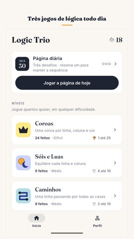
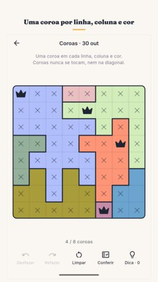
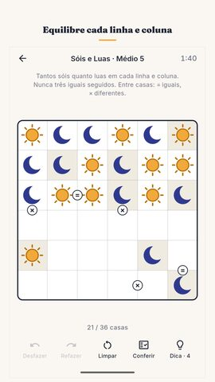
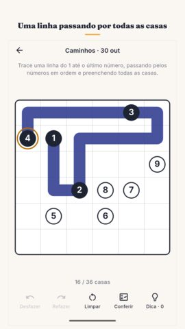
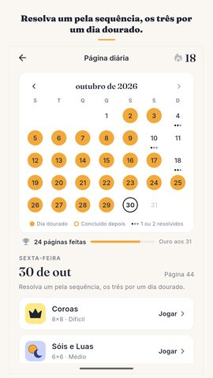
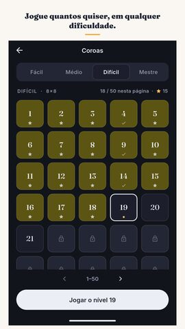
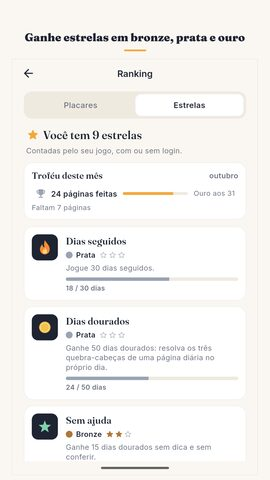
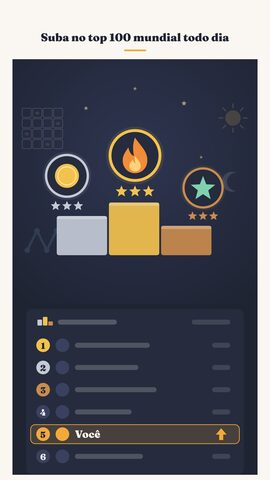

Kit de imprensa do Logic Trio
Tudo o que você precisa para escrever sobre o jogo ou mostrá-lo em um vídeo. Use à vontade.
Logic Trio: Jogos de Lógica
Lógica todo dia: Coroas, Sóis e Luas, Caminhos. Solução única, offline.
Vídeos
Capturas de tela
















Ícone e banner


Sobre o jogo
Uma página nova com três desafios de lógica chega todo dia, e é a mesma para todos os jogadores do mundo. Coroas, Sóis e Luas, Caminhos: cada um tem uma única solução, e, em Coroas e em Sóis e Luas, você nunca precisa chutar. Resolva um para manter sua sequência, os três para um dia dourado.
A página diária
A página vira à meia-noite, no horário do seu telefone. O primeiro dia foi 17 de setembro de 2026, e toda página desde então continua no calendário do mês, então um dia que você perdeu é um dia que dá para voltar e jogar. Um desafio resolvido já mantém a sequência viva, e a exigência é baixa de propósito: um dia corrido não deve custar uma sequência construída durante semanas. Resolva os três e o dia fica dourado. Dez dias dourados no mês valem um troféu de bronze, vinte valem um de prata, e o mês inteiro vale um de ouro. As proteções de sequência cobrem os dias em que a vida atrapalha, e quando a página termina aparece um cartão de resultado curto, sem spoiler, para você mandar a quem quiser.
Os três jogos
Coroas: coloque uma coroa em cada linha, em cada coluna e em cada cor, e nunca deixe duas coroas se tocarem, nem na diagonal. É um star battle.
Sóis e Luas: preencha o tabuleiro de modo que cada linha e cada coluna tenham tantos sóis quanto luas, e nunca três iguais seguidos. É um quebra-cabeça binário.
Caminhos: trace uma linha só, do primeiro número até o último, passando pelos números em ordem e preenchendo todas as casas. É um number path.
Desafios que não acabam
Além da página diária, cada um dos três jogos de lógica tem seus próprios níveis numerados, em quatro dificuldades: fácil, médio, difícil e expert. As quatro ficam abertas desde o primeiro minuto, porque obrigar você a passar por níveis fáceis para chegar a um difícil só faz perder o seu tempo. Cada jogo tem 1.200 níveis conferidos duas vezes, 3.600 nos três, e quando você chega ao fim do pacote o próprio telefone vai criando mais, pelo tempo que você quiser. Todo nível do pacote foi resolvido duas vezes, por dois métodos diferentes, antes de entrar no jogo: a solução única é um fato conferido, não uma promessa.
Ajuda que ensina
Desfazer e Refazer são ilimitados. Conferir é grátis e ilimitado, e diz como você está indo sem entregar o tabuleiro. A dica também não preenche a resposta: ela mostra onde olhar e, em Coroas e em Sóis e Luas, explica em uma frase por que aquela casa só pode ser aquilo, para o próximo desafio ficar um pouco mais fácil que o anterior. Se já houver um erro no tabuleiro, a dica aponta primeiro o erro.
Nada corre contra você
Não há vidas, não há energia, as jogadas não acabam e nada apressa você. O cronômetro só marca o tempo que você levou, serve para os seus recordes e dá para desligar. Não precisa de conta. Entrar no Google Play Games é opcional: leva seu progresso a outro telefone e traz conquistas e placares mundiais. Seus tempos, seu recorde de sequência e seus desafios resolvidos ficam em uma página só. O jogo inteiro funciona offline: dá para jogar sem internet, sempre.
Feito para todo mundo ler
Inglês, hindi, português, espanhol, indonésio, alemão e francês. Um tema claro e um escuro. Padrões sobre as regiões coloridas para quem é daltônico: o tabuleiro funciona também em preto e branco. Um lembrete diário opcional, desligado até você pedir. Menos de 25 MB para baixar.
Grátis, com anúncios
Logic Trio é um quebra-cabeça de lógica grátis, pago por anúncios. Nenhum anúncio interrompe um desafio, nenhum aparece quando você abre o jogo e nenhum entra entre os três desafios do dia; os desafios são offline, só os anúncios precisam de conexão. A última semana do calendário fica sempre aberta, e um vídeo curto e opcional pode abrir de vez uma página antiga, repor suas dicas ou recuperar uma sequência perdida. Nada disso é obrigatório para continuar jogando.
Feito pela Nimbleknot.
Dúvidas e problemas: nimbleknot.games@gmail.com
Política de privacidade e termos de uso: https://nimbleknot.github.io/logictrio/
Não sou programador, então usei IA para me ajudar com o código. — Ritesh, Nimbleknot
Contato
nimbleknot.games@gmail.com · Ficha técnica completa (em inglês)